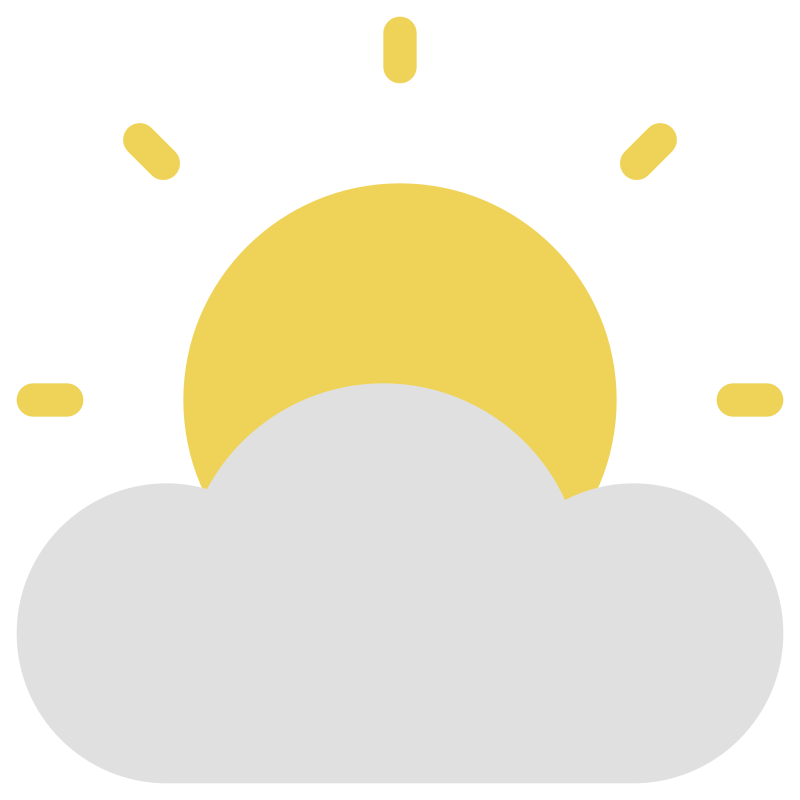
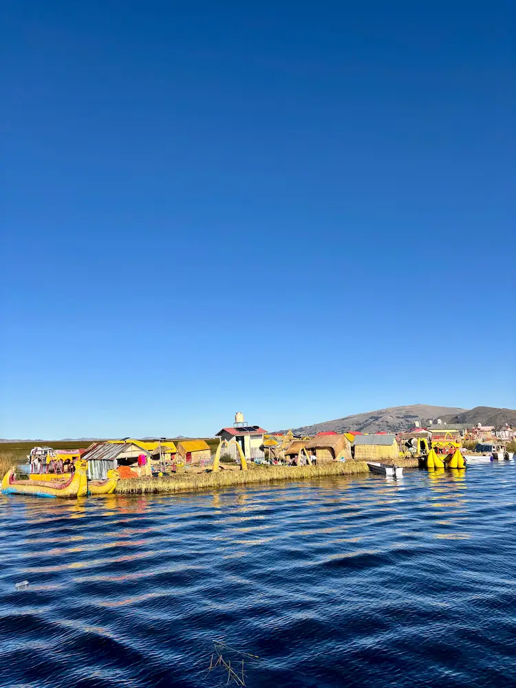

Data
- Area:71,999 km²
- Population:1,238,435
- Capital:Puno City
- Languages:Spanish
- Currency:Peruvian Sol
- Time Zone:UTC-5
- Calling Code:+51
- Internet TLD:.pe
Weather

- Temperature:2.0°C
- Conditions:Clear and dry
- Wind:11.5 km/h
- Wind Chill:

